This section shows some screenshots of CPIPMain.py‘s output. Some Real Examples are shown below.
CPIPMain.py produces a set of HTML and SVG pages for each source file preprocessed. As well as the Translation Unit CPIPMain.py generates information about the three important tasks for a preprocessor: file inclusion, conditional compilation and macro replacement.
The index.html shows the list of files preprocessed in this pass (linked to file specific pages).
It also shows the command line used and an explanation from the CPIPMain.py help system as to what each option means.
For example:
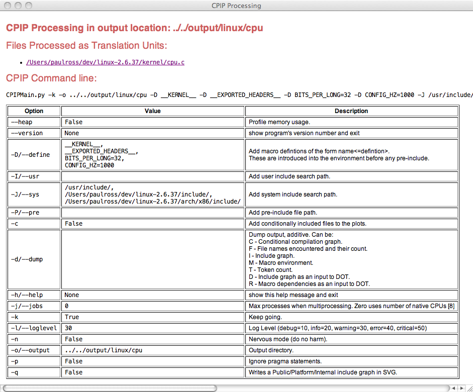Each in the list of files preprocessed in this pass is linked to file specific page.
These describe the results of preprocessing a single file, it contains links to:
The top of the page includes links to these sections (described in detail below):
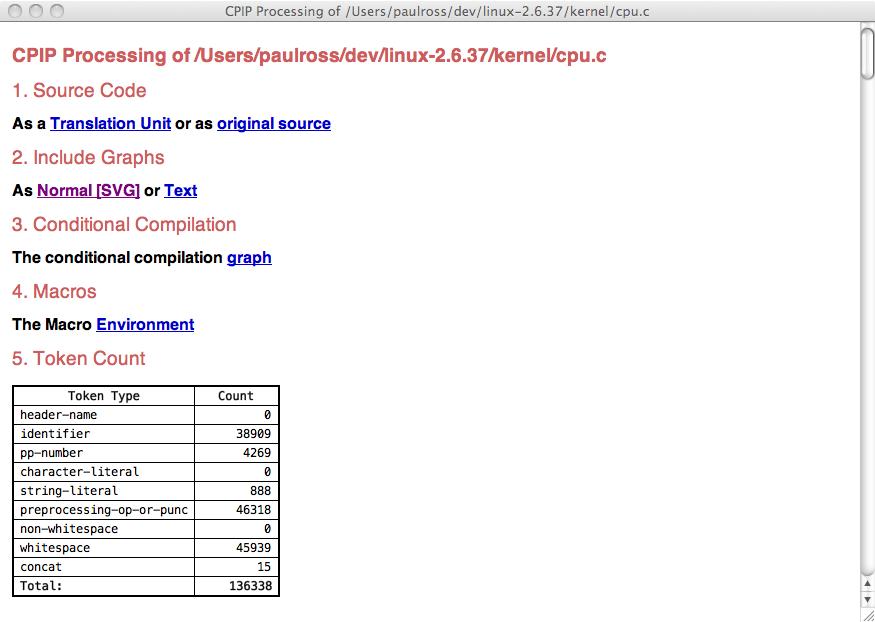Further down the page is a table showing what files were included, from where and how many times:
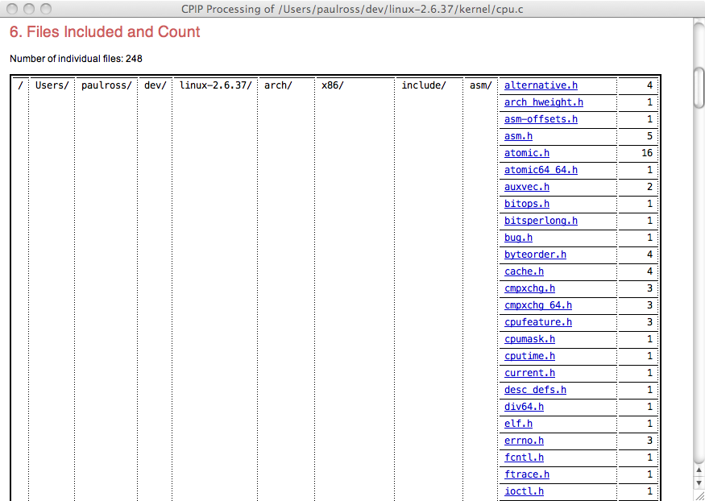Here is an explanation for the table:
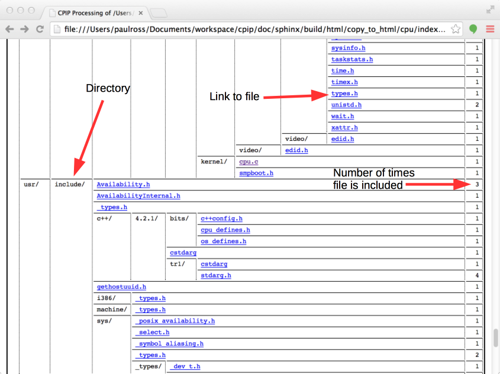All processed source code (original file and and included files) is presented as syntax highlighted HTML.
The syntax is the C pre-preprocessor language. Macro names are linked to their definition in the Macro Definitions page.
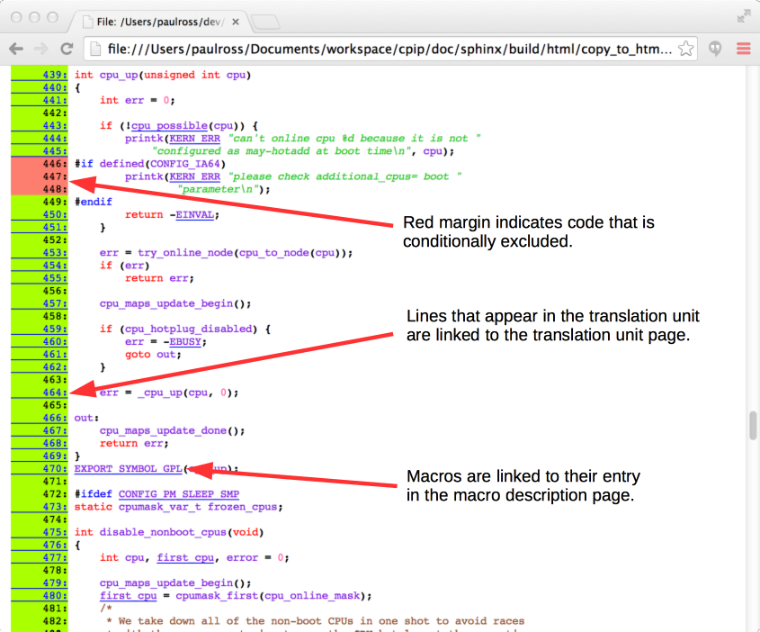The preprocessed file and all its #include‘s become a Translation Unit which CPIPMain.py represents as an HTML page.
Each #include statement is represented in a nested fashion, any source code in the translation unit is presented syntax highlighted. The syntax is, of course, the C pre-processor language thus both typedef and char are pre-processor identifiers even if later on typedef is seen as a C keyword.
The numbered links thus [ 19] are to an HTML representation of the orignal source code file/line.
The other navigational element present is when the file path is the file being pre-processed a forward link is there to to the next part of this file, thus skipping over intermediate #include‘d code.
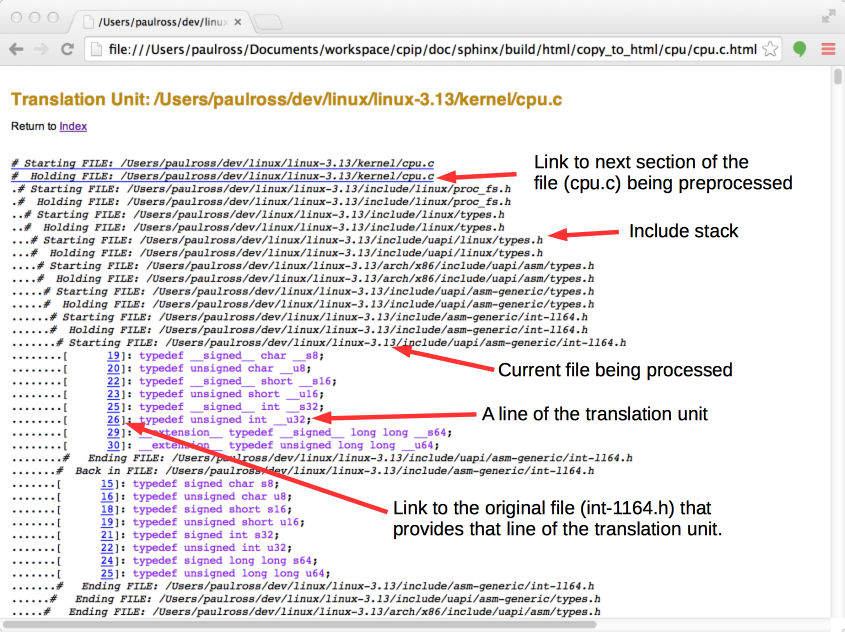Further down you can see the actual code from cpu.c, notice the macro expansion on line 76.
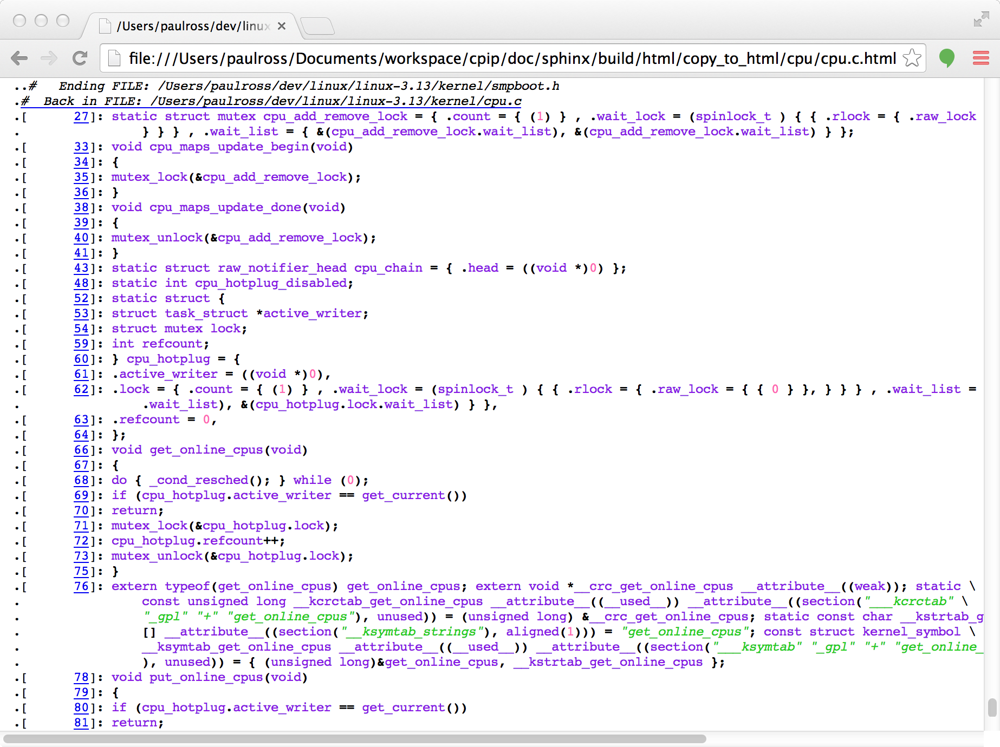The file specific page offers a link to an SVG visualisation of the file include graph.
The diagram represents a tree with the root (the file being preprocessed) at center left. Each node represents a file and each edge represents an #include directive. Increasing include depth is left-to-right and source code order (i.e. order of the #include directives) is top to bottom.
At the top are various zoom factors that you can use to view the graph, initially the page opens at the smallest scale factor to give you an impression of what is going on:
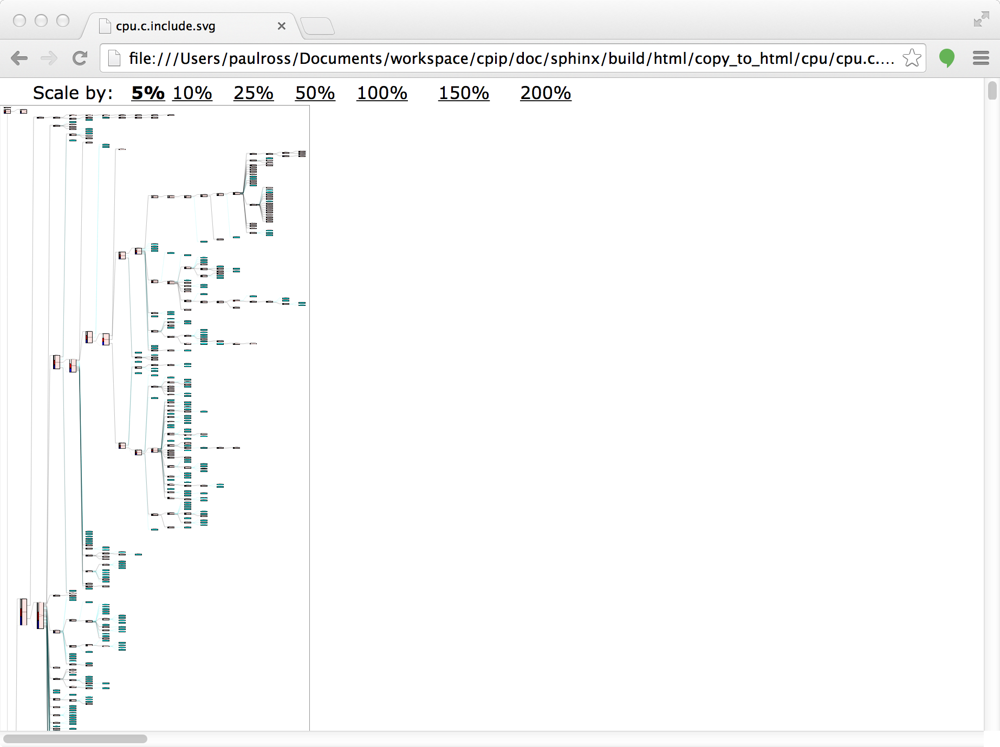Zooming in to 100% on one part of the graph gives a wealth of information. In this picture the processor.h file is represented on the left and the files that it #include‘s to its right.:
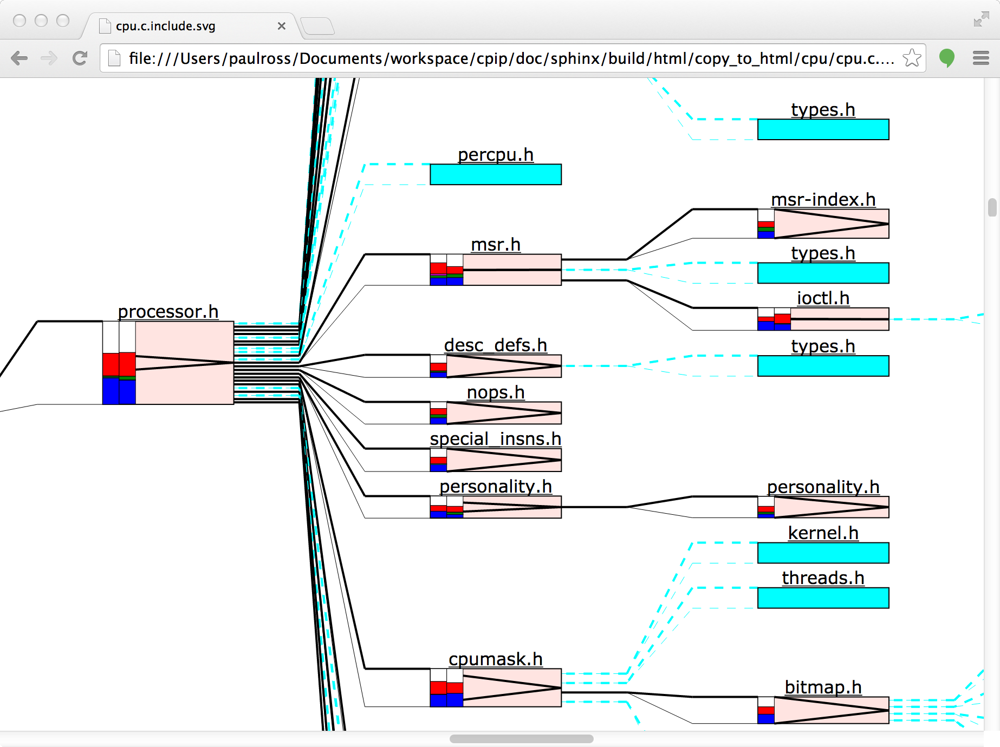Each file is represented by a fixed width block, the height is proportional to the number of preprocessing tokens produced by a file (and its #include‘s) [1]. Cyan coloured blocks represent files that are included but contain no effective content, usually because it has already been included and the header guards use conditional compilation to prevent preprocessing more than once (types.h for example).
The ‘V’ symbol in the block represents the relative size of the file and its descendants, if the ‘V’ touches top and bottom then all the tokens come from this file (personality.h for example). Where the ‘V’ is closed, or almost so, it means the bulk of the tokens are coming from the descendent includes (msr.h for example).
The coloured bars on the left represent the count of different token types, the left bar being the current file, the right bar being the total of the descendants. See below for which Token Types corespond to each colour.
Many parts of this diagram can display additional information when moving the mouse over various bits of the file block.
For example mousing over the file name above the box shows the the absolute path of the file stack as a pop-up yellow block. At the top of this list is the file we are preprocessing, then the stack of included files downwards to processor.h:
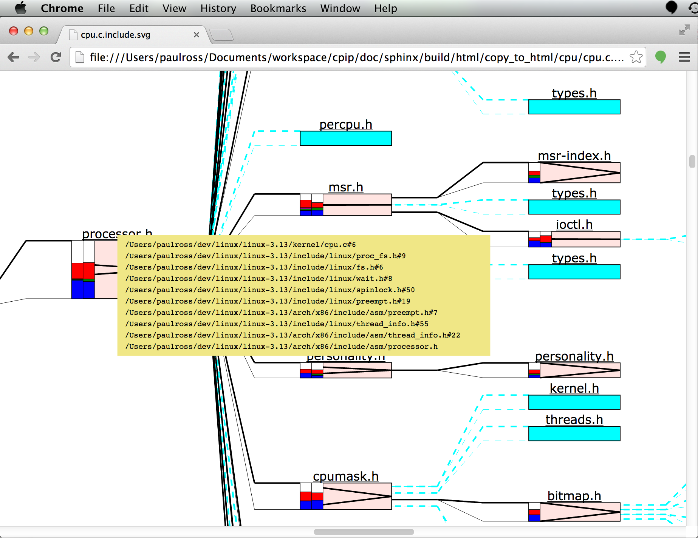Moving the mouse over to the left of the block reveals a host of information about the file inclusion process:
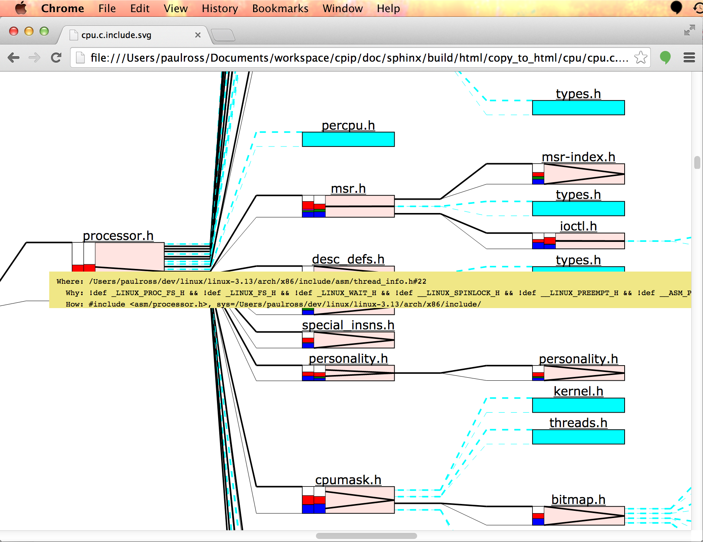This pop-up yellow block contains the following:
If you are interested in what types of preprocessor tokens were encountered than there is a host of information available to you. On the left hand side of each file block is a colour coded histogram of token types. If the file includes others then there will be two, the left hand one is for the file, the right hand one is for all the files it includes. Hovering over either histogram pops up the legend thus:
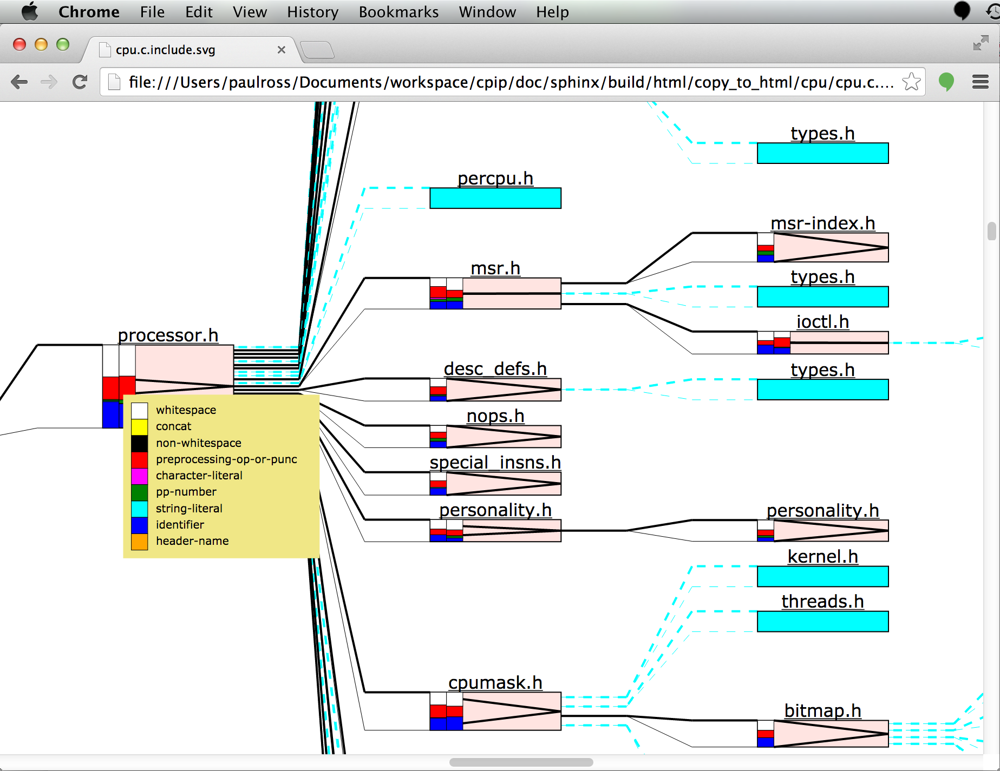The actual count of tokens is seen when moving the mouse over the centre of the box. There are three sets of two columns, the left column of the set is total tokens, the right column is for significant tokens, that is those that are not conditionally excluded by #if etc. statements.
The first set is for the specific file, the second set is the descendents and the third set is the total.
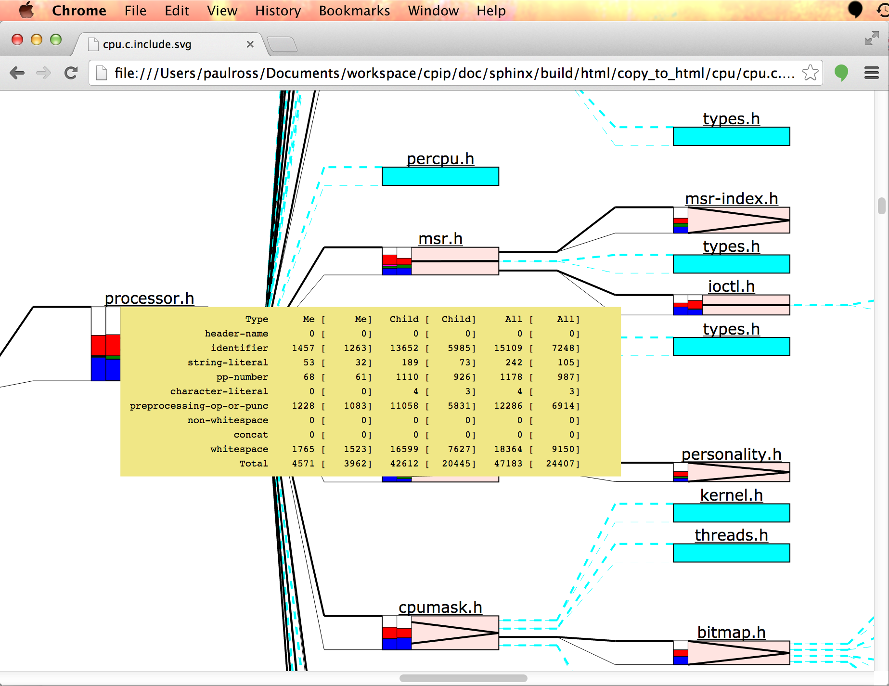One tricky area for comprehending source code is understanding what code is conditionally compiled. Looking at a source file it is not immediately obvious which #if etc. statements are actually being processed.
As an aid CPIP produces an HTML page that is the translation unit with only the conditional compilation statements, what is more they are nested according to their logical execution condition and colour coded according to the resolved state; green means code will be part of the translation unit and red means those statements will be ignored. The links in the (artificial) comment following the statement are to the HTML representation of the file where the statement occurs.
Here is an example:
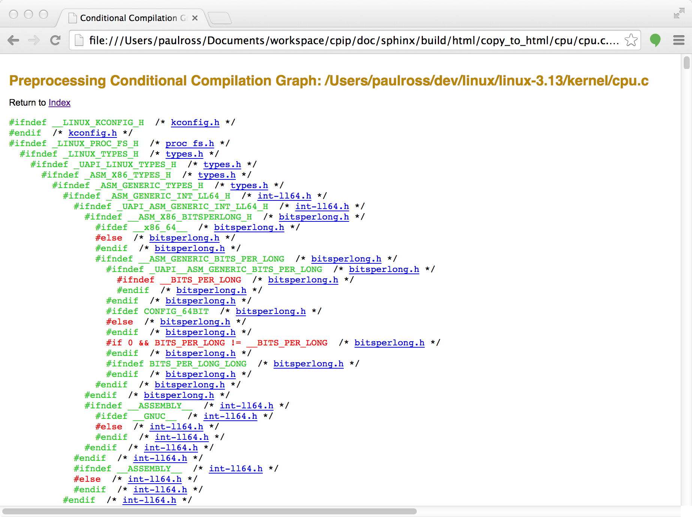CPIP retains all information about marcos during preprocessing and the file specific page containing macro information starts like this:
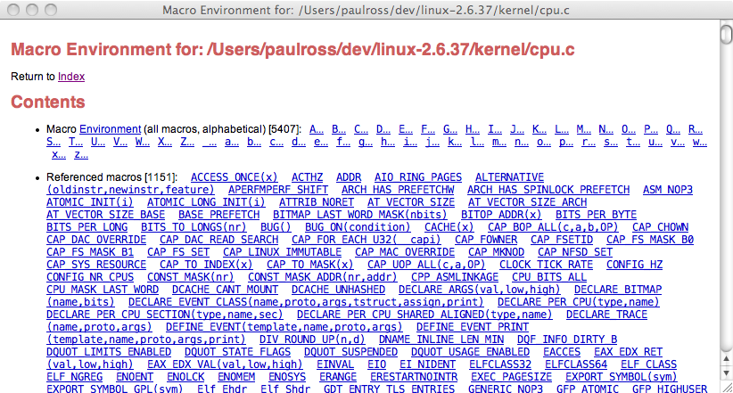The contents starts with a list of links to macro information further down the page; the first set of links is alphabetical to all macros that are declared, even if they are not used. The second set is to any macros that are actually used in pre-processing this file.
These are all linked to the macro details that looks like this, for example BITMAP_LAST_WORD_MASK:
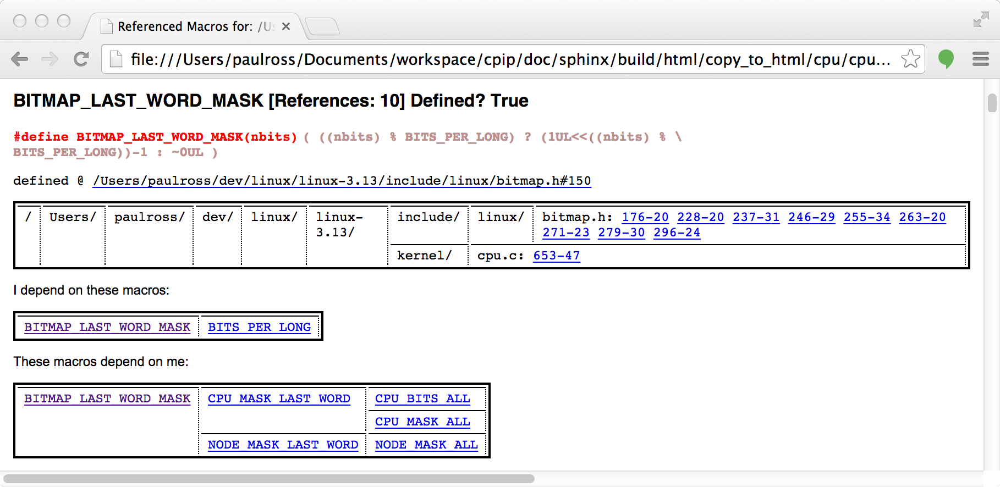Each macro description has the following:
CPIP’s knowledge about macros and its ability to generate linked documents provides an especially powerful feature for understanding macros.
CPIPMain is a command line tool that you can invoke very much like your favorite pre-processor. CPIPMain produces a number of HTML pages and SVG files that make it easier to understand what is happening during preprocessing. This section shows some examples of the kind of thing that CPIP can do.
Here is CPIPMain.py pre-processing the cpu.c file from the Linux Kernel.
Footnotes
| [1] | A special case is that the may be a file "Unnamed Pre-Include" at the top left and joined to the preprocessed file with a thick light grey line. This ‘virtual’ file contains the macro declarations made on the CPIPMain.py command line. |